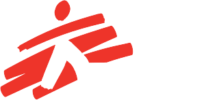
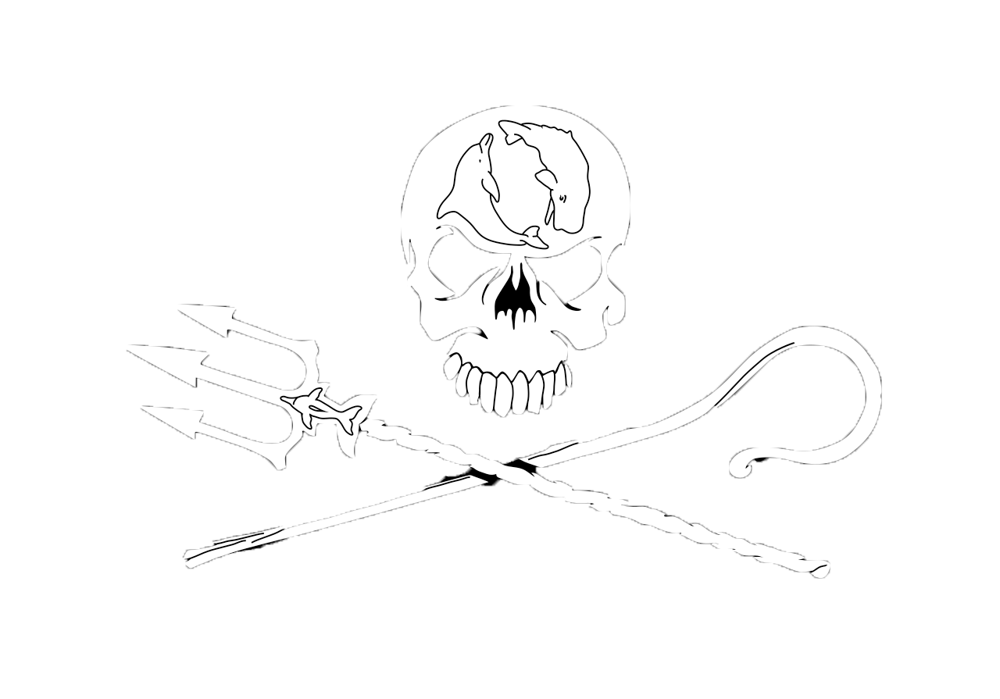
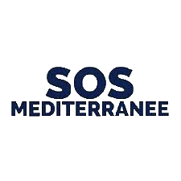
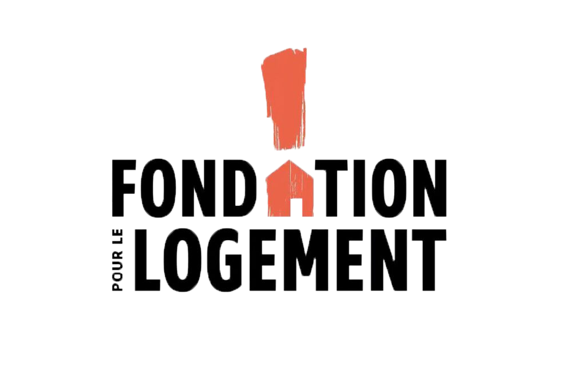

RubiCollect est un club solidaire fondé en septembre 2025 au sein de l’école Rubika par un groupe d’étudiants désireux de mettre leurs compétences et leur énergie au service de causes sociales et humanitaires.
Dans un monde marqué par des tensions politico-sociales croissantes, des inégalités économiques persistantes et une multiplication des crises humanitaires, RubiCollect est né de la conviction que la solidarité doit se construire dès maintenant, et que chacun même à l’échelle étudiante peut contribuer à faire la différence. Le club a pour mission principale de collecter des fonds tout au long de l’année au travers d’événements créatifs, d’initiatives collectives ou d’actions de sensibilisation, afin de redistribuer l’intégralité des sommes récoltées à des associations œuvrant dans des domaines essentiels : lutte contre la pauvreté, accès à l’éducation, protection de l’environnement, aide aux victimes de catastrophes ou encore défense des droits fondamentaux.
Les membres de RubiCollect se réunissent autour d’une même charte : agir avec transparence, bienveillance et responsabilité. Le club regroupe des étudiants issus de différentes filières design, animation, jeu vidéo, management ainsi que des bénévoles extérieurs sensibles à la cause. Ensemble, ils conçoivent et organisent des actions solidaires qui mobilisent la communauté de Rubika et, plus largement, les citoyens locaux.
L’impartialité constitue un pilier fondamental de RubiCollect. Les fonds collectés sont distribués sans discrimination et selon les besoins identifiés, en accordant toujours la priorité aux personnes ou aux causes les plus urgentes.
Au-delà de sa mission de collecte, RubiCollect souhaite également informer, sensibiliser et témoigner des réalités auxquelles sont confrontées les associations partenaires. En rendant visibles leurs actions, le club contribue à renforcer la compréhension des enjeux humanitaires et sociaux qui traversent notre époque.
Pour garantir son autonomie et rester fidèle à ses valeurs, RubiCollect repose exclusivement sur l’engagement bénévole de ses membres et sur la générosité de la communauté : étudiants, enseignants, entreprises locales et particuliers. Cette indépendance financière est essentielle dans un contexte où la confiance envers les grandes institutions est fragilisée, et où la solidarité citoyenne représente un soutien vital pour de nombreuses organisations de terrain.
Enfin, RubiCollect développe des méthodes et des outils pour mener des actions solidaires efficaces et responsables : gestion transparente des dons, communication pédagogique, partenariats éthiques et initiatives créatives permettant de sensibiliser sans culpabiliser.
RubiCollect agit aujourd’hui en soutien à plusieurs associations locales, nationales et internationales. Chaque année, des dizaines d’étudiants s’investissent pour faire de ce club un moteur d’espoir, de générosité et de mobilisation au sein de Rubika.

|  |  |  |  |